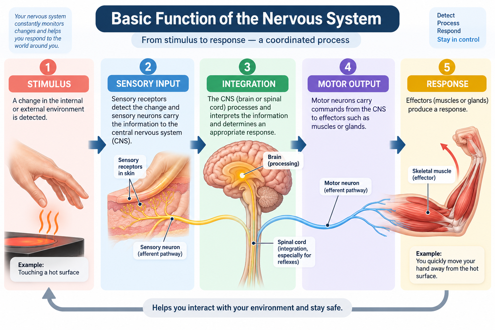
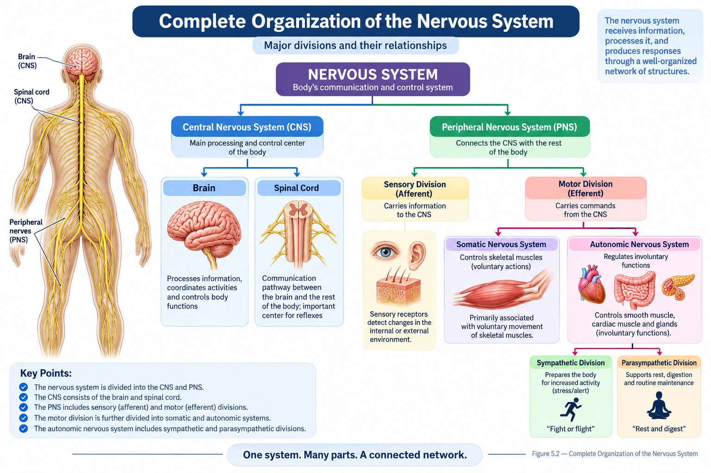
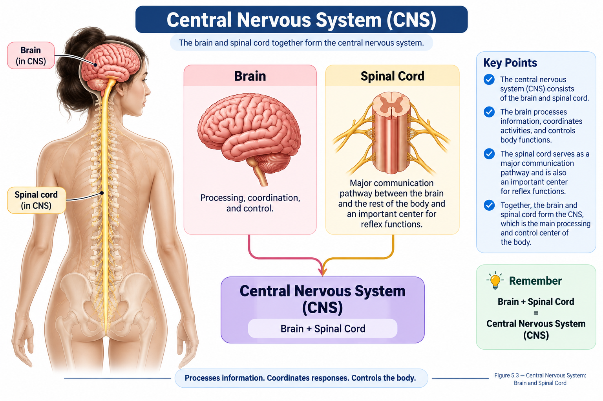
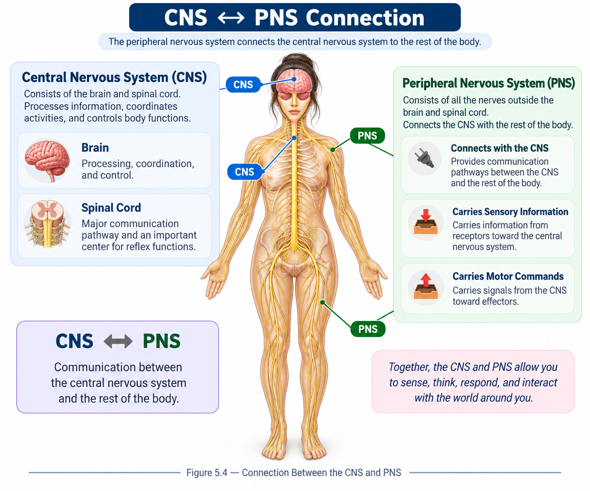
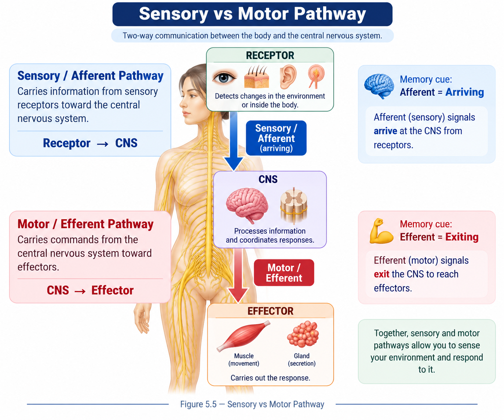
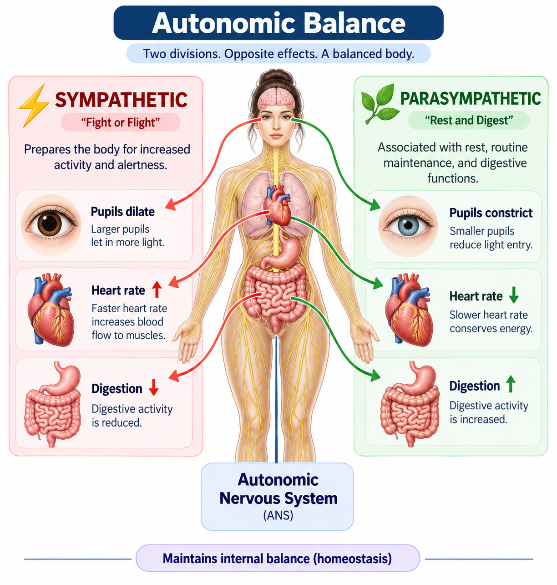
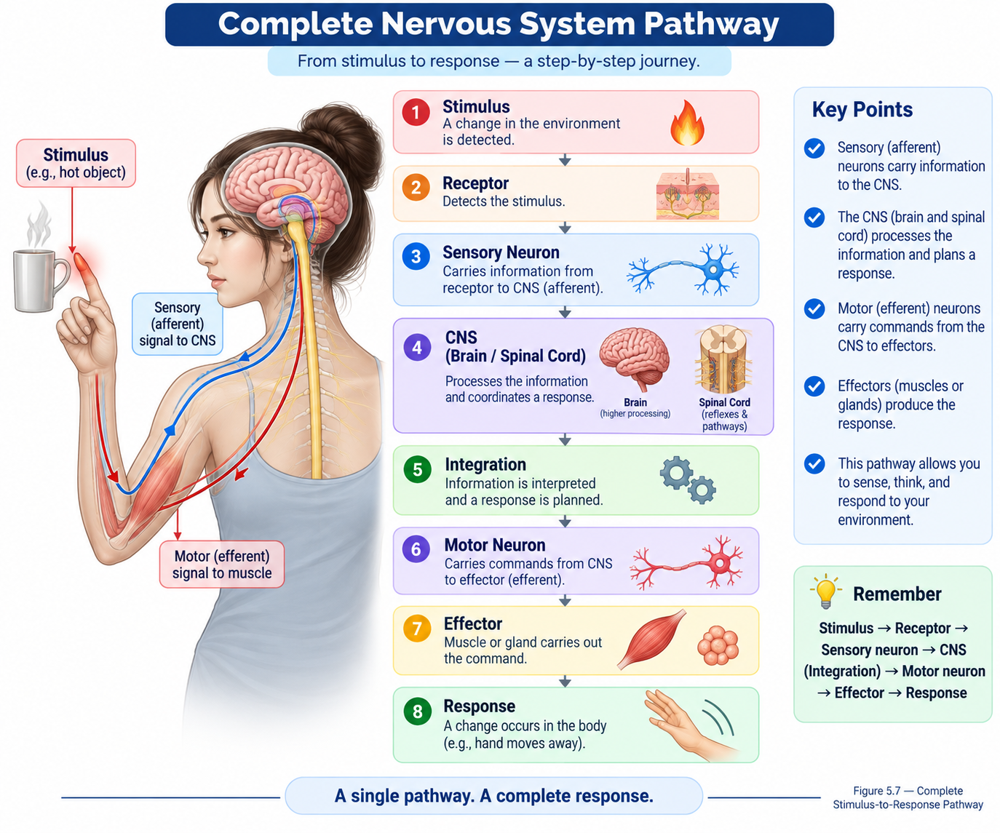

The nervous system is the body's rapid communication and control network. It receives information, processes that information, and helps produce appropriate responses throughout the body.
📑 Table of Contents
- 🎯 Learning Objectives
- 📖 Introduction
- 🧠 What is the Nervous System?
- ⚙️ Functions of the Nervous System
- 🏗️ Organization of the Nervous System
- 🧠 Central Nervous System
- 🕸️ Peripheral Nervous System
- 📥 Sensory & Motor Divisions
- 🎛️ Somatic & Autonomic Nervous Systems
- 🔄 Sympathetic & Parasympathetic Systems
- ⚡ From Stimulus to Response
- 📊 Nervous System at a Glance
- 🧠 Quick Revision
- ❓ Practice Quiz
🎯 Learning Objectives
After completing this lesson, you should be able to:
- Define the nervous system and describe its basic role in communication and control.
- Identify the major functions of the nervous system.
- Distinguish the central nervous system (CNS) from the peripheral nervous system (PNS).
- Identify the sensory and motor divisions of the PNS.
- Distinguish the somatic and autonomic divisions.
- Recognize the basic roles of the sympathetic and parasympathetic divisions.
- Explain the basic pathway from a stimulus to a nervous-system response.
- Understand how the major divisions of the nervous system are related to one another.
📖 Introduction
The nervous system is one of the body's major communication and control systems. It allows the body to detect changes, process information, coordinate activities, and produce responses.
Information can come from the external environment or from inside the body. The nervous system receives this information, processes it, and communicates appropriate responses to different parts of the body.
The nervous system can be organized into several interconnected divisions. Understanding this organization provides the foundation for studying neurons, the brain, spinal cord, nerves, reflexes, and autonomic control in later lessons.
📌 Simple Idea
Stimulus → Information → Processing → Response
🧠 What is the Nervous System?
The nervous system is a specialized communication and control network made up of structures that receive, process, and transmit information throughout the body.
Its basic activity can be understood through three major processes:
📥 Sensory Input
Information is detected by sensory receptors and carried toward the central nervous system.
🧠 Integration
Information is processed and interpreted so that an appropriate response can be determined.
📤 Motor Output
Commands are sent to effectors such as muscles or glands to produce a response.

⚙️ Functions of the Nervous System
The nervous system performs several important functions that allow the body to detect information, coordinate activities, and respond to changes.
Sensation
Detects information from the external environment and from within the body.
Integration
Processes and interprets incoming information and helps determine an appropriate response.
Motor Control
Controls responses through muscles and glands.
Coordination
Helps coordinate activities between different parts and systems of the body.
Homeostasis
Contributes to the regulation of internal conditions and maintenance of body balance.
🏗️ Organization of the Nervous System
The nervous system is organized into major divisions based on their location and function. The central nervous system forms the main processing and control center, while the peripheral nervous system connects it with the rest of the body.

Nervous System → CNS + PNS
🧠 Central Nervous System
The central nervous system (CNS) consists of the brain and spinal cord. It acts as a major center for processing information and coordinating responses.
Brain
A major center for processing information, coordination, and control.
Spinal Cord
A major communication pathway between the brain and the rest of the body and an important center for reflex functions.

📌 Remember
CNS = Brain + Spinal Cord
🕸️ Peripheral Nervous System
The peripheral nervous system (PNS) includes the nervous structures outside the brain and spinal cord. It connects the central nervous system with receptors, muscles, glands, and other parts of the body.
Provides communication pathways between the CNS and the rest of the body.
Carries information from receptors toward the central nervous system.
Carries signals from the CNS toward effectors.

📥 Sensory & Motor Divisions
The peripheral nervous system can be functionally divided into sensory (afferent) and motor (efferent) pathways.
Sensory / Afferent
Carries information from sensory receptors toward the central nervous system.
Receptor → CNSMotor / Efferent
Carries commands from the central nervous system toward effectors.
CNS → Effector
🧠 Quick Pattern
Afferent → Arrives at CNS
Efferent → Exits CNS
🎛️ Somatic & Autonomic Nervous Systems
The motor division of the peripheral nervous system can be further organized into somatic and autonomic systems.
Somatic Nervous System
Primarily associated with control of skeletal muscles and voluntary body movement.
Autonomic Nervous System
Regulates involuntary functions involving structures such as smooth muscle, cardiac muscle, and glands.
📌 Remember
Somatic → Skeletal muscle
Autonomic → Involuntary functions
🔄 Sympathetic & Parasympathetic Systems
The autonomic nervous system includes sympathetic and parasympathetic divisions. These divisions help regulate many involuntary functions of the body.
Sympathetic
Associated with responses that prepare the body for increased activity and alertness.
Parasympathetic
Associated with rest, routine maintenance, and digestive functions.

🧠 Simple Idea
Autonomic Nervous System → Sympathetic + Parasympathetic
⚡ From Stimulus to Response
A basic nervous-system response can be understood as a sequence in which a stimulus is detected, information is carried to the central nervous system, the information is processed, and a response is produced.

📌 Complete Pathway
Stimulus → Receptor → Sensory Pathway → CNS → Motor Pathway → Effector → Response
📊 Nervous System at a Glance
The major divisions of the nervous system can be summarized using their basic organization and roles.
| Level | Division | Main Role |
|---|---|---|
| Nervous System | CNS | Central processing and control |
| Nervous System | PNS | Communication with the rest of the body |
| PNS | Sensory / Afferent | Carries information toward the CNS |
| PNS | Motor / Efferent | Carries commands away from the CNS |
| Motor | Somatic | Associated with skeletal muscle control |
| Motor | Autonomic | Regulates involuntary functions |
| Autonomic | Sympathetic | Associated with alert and increased activity |
| Autonomic | Parasympathetic | Associated with rest and maintenance functions |
🧠 Quick Revision
✅ The nervous system is a major communication and control network of the body.
✅ Its basic processes include sensory input, integration, and motor output.
✅ The nervous system can be divided into the CNS and PNS.
✅ CNS = brain + spinal cord.
✅ PNS connects the CNS with the rest of the body.
✅ Sensory / afferent pathways carry information toward the CNS.
✅ Motor / efferent pathways carry commands away from the CNS.
✅ The somatic nervous system is mainly associated with skeletal muscle control.
✅ The autonomic nervous system regulates many involuntary functions.
✅ The autonomic nervous system includes sympathetic and parasympathetic divisions.
✅ A basic nervous-system pathway can be summarized as stimulus → receptor → CNS → effector → response.
📚 Explore the Nervous System
Continue through the sub-lessons to explore the nervous system in greater detail.
❓ Practice Quiz
Ready to test your understanding of the basic organization and functions of the nervous system?
Complete the quiz to reinforce CNS, PNS, sensory, motor, somatic, autonomic, sympathetic, and parasympathetic organization.